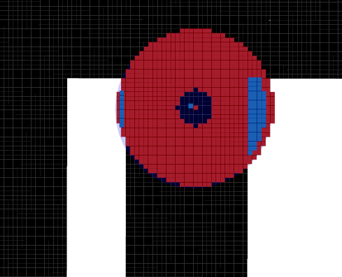
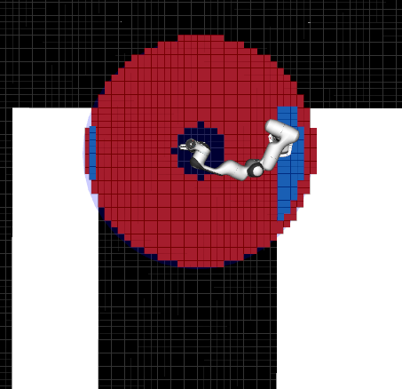
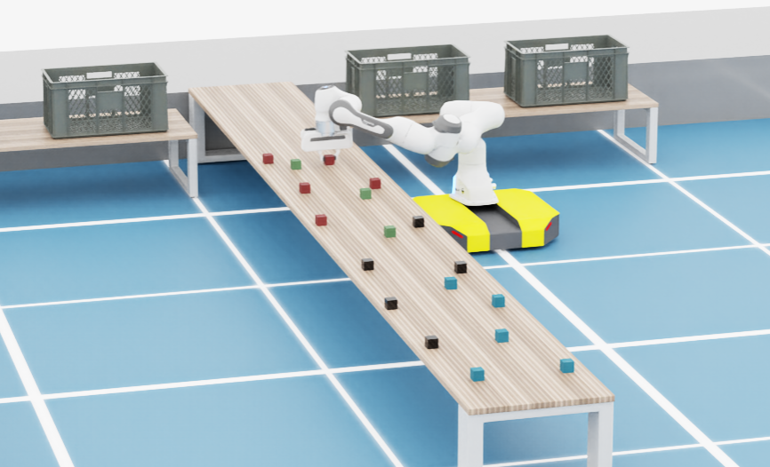
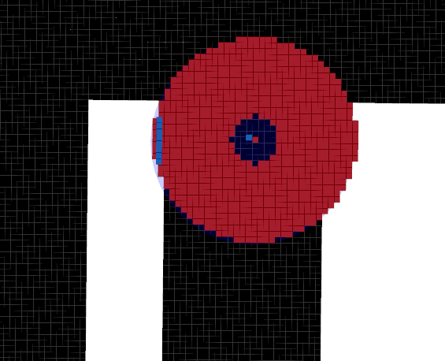
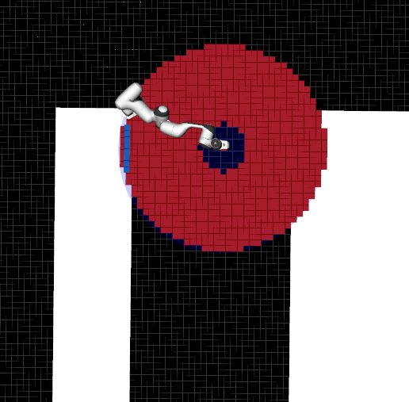
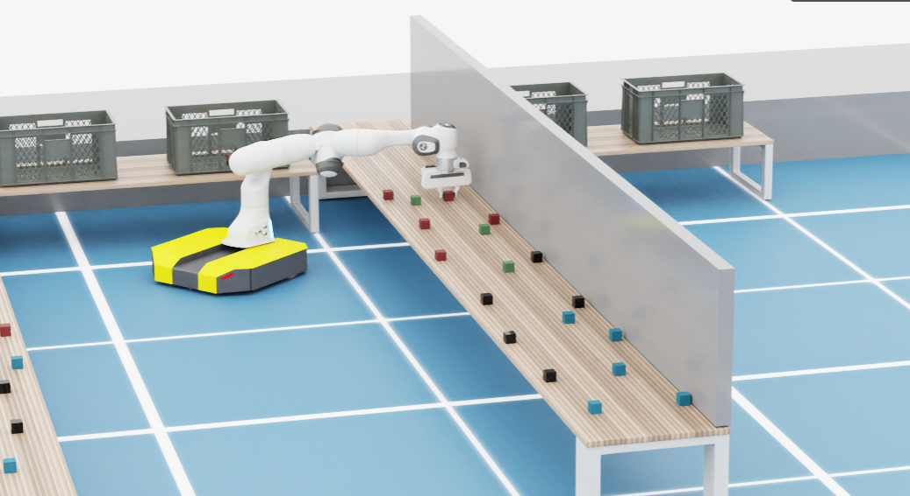

ik_validator.cpp (Atual v1.0)
O nó IKValidator é o componente mais computacionalmente intensivo do sistema de planejamento.
Sua função é validar se uma posição candidata para a base do robô (x, y) permite, geometricamente e cinematicamente, que o End-Effector alcance a pose de pega desejada.
Diferente de uma verificação simples de distância, este nó instancia uma simulação completa do robô utilizando a MoveIt Core API, considera a orientação da base, os limites das juntas (joint limits) e as auto-colisões.
—
1. Inicialização Assíncrona e Monitoramento de Cena
O MoveIt 2 exige o carregamento do URDF e SRDF, o que pode demorar alguns segundos. Para não bloquear o spin do ROS, utiliza-se um padrão de Inicialização Atrasada (Delayed Init).
O nó cria um PlanningSceneMonitor (PSM) que mantém uma cópia em tempo real do ambiente do robô (incluindo obstáculos adicionados dinamicamente via sensores).
Junta Virtual (Virtual Joint):
O conceito chave aqui é a detecção automática da “Junta Virtual”.
No MoveIt, para mover a base de um manipulador móvel durante o planejamento sem mover o robô real, define-se uma junta do tipo PLANAR ou FLOATING conectando o world ao base_link.
O nó busca essa junta automaticamente para injetar as posições candidatas (x, y) durante a validação.
void IKValidator::delayed_init()
{
if (initialized_.load()) { init_timer_->cancel(); return; }
try {
if (!robot_model_loader_) {
robot_model_loader_ = std::make_shared<robot_model_loader::RobotModelLoader>(shared_from_this(), "robot_description");
}
if (!psm_) {
psm_ = std::make_shared<planning_scene_monitor::PlanningSceneMonitor>(shared_from_this(), robot_model_loader_);
psm_->startSceneMonitor();
psm_->startWorldGeometryMonitor();
psm_->startStateMonitor();
}
if (!psm_->getRobotModel()) return;
robot_model_ = psm_->getRobotModel();
if (!robot_model_->hasJointModelGroup(group_name_)) {
RCLCPP_ERROR(this->get_logger(), "Grupo '%s' não existe!", group_name_.c_str());
return;
}
const auto& virtual_joints = robot_model_->getJointModels();
for (const auto* joint : virtual_joints) {
if (joint->getType() == moveit::core::JointModel::PLANAR ||
joint->getType() == moveit::core::JointModel::FLOATING) {
virtual_joint_name_ = joint->getName();
RCLCPP_INFO(this->get_logger(), "Virtual Joint encontrada: %s", virtual_joint_name_.c_str());
break;
}
}
initialized_.store(true);
init_timer_->cancel();
RCLCPP_INFO(this->get_logger(), "IK Validator PRONTO.");
} catch (const std::exception& e) {
RCLCPP_ERROR(this->get_logger(), "Erro Init: %s", e.what());
}
}
—
2. O Algoritmo de Validação (Find Best Base)
Esta é a função central. Ela recebe uma lista de pontos candidatos (gerados pelo ReachabilityNode) e retorna a melhor posição base onde o IK foi bem-sucedido.
Configuração da Cena (Thread-Safe)
Antes de iterar, é preciso “congelar” a cena atual para garantir que obstáculos não se movam durante o cálculo matemático.
Utiliza-se LockedPlanningSceneRO para leitura e cria-se um diff (diferença) para modificar a cena localmente sem afetar o sistema global.
Gerenciamento de Colisões (ACM):
Para pegar um objeto, o gripper precisa tocar nele. Por padrão, o MoveIt considera isso uma colisão.
O código manipula a Allowed Collision Matrix (ACM) para permitir explicitamente o contato entre os elos da garra (gripper_links) e o objeto alvo (authorized_collision).
psm_->requestPlanningSceneState();
planning_scene_monitor::LockedPlanningSceneRO parent_scene(psm_);
if (!parent_scene) return std::nullopt;
planning_scene::PlanningScenePtr temp_scene = parent_scene->diff();
collision_detection::AllowedCollisionMatrix& acm = temp_scene->getAllowedCollisionMatrixNonConst();
std::vector<std::string> gripper_links = {"panda_link8"};
if (robot_model_->hasJointModelGroup("hand"))
{
const auto& links = robot_model_->getJointModelGroup("hand")->getLinkModelNames();
gripper_links.insert(gripper_links.end(), links.begin(), links.end());
}
if (!authorized_collision.empty())
{
for (const auto& link : gripper_links)
{
if (robot_model_->hasLinkModel(link))
{
acm.setEntry(link, authorized_collision, true);
}
}
}
else
{
RCLCPP_DEBUG(this->get_logger(), "Nenhum objeto autorizado fornecido. Colisão padrão mantida.");
}
Callback de Validação Customizado
O solver de IK do MoveIt (KDL ou Trac-IK) apenas resolve a matemática das juntas. Ele não sabe se o cotovelo do robô colidirá com a parede.
Por isso, injeta-se uma função lambda (validity_callback) que é chamada a cada solução matemática encontrada para testar colisões reais na cena.
moveit::core::GroupStateValidityCallbackFn validity_callback =
[&temp_scene, &acm](moveit::core::RobotState* state, const moveit::core::JointModelGroup* group, const double* values) -> bool
{
state->setJointGroupPositions(group, values);
collision_detection::CollisionRequest req;
req.group_name = group->getName();
req.verbose = false;
req.contacts = false;
collision_detection::CollisionResult res;
temp_scene->checkCollision(req, res, *state, acm);
return !res.collision;
};
Loop de Verificação e Orientação da Base
Para cada ponto candidato (x, y):
Verificação 2D: Consulta-se o
SharedObstacleGraphpara garantir que a base não esteja dentro de uma parede (validação rápida O(1)).Cálculo de Orientação (Yaw): O robô deve estar virado para o objeto. Calcula-se o ângulo utilizando arco-tangente:
\[\theta_{base} = \text{atan2}(y_{obj} - y_{base}, x_{obj} - x_{base})\]Injeção na Junta Virtual: Move-se o robô “imaginário” para a posição ($x, y, theta$).
Solver IK: Chama-se a função
setFromIK. Se o solver encontrar uma configuração de juntas válida para o braço alcançar o alvo a partir dessa base, o ponto é salvo.
for (const auto& base_pos_3d : robot_positions)
{
float bx = std::get<0>(base_pos_3d);
float by = std::get<1>(base_pos_3d);
float bz = std::get<2>(base_pos_3d);
if (std::isnan(bx) || std::isnan(by) || std::isnan(bz)) continue;
std::pair<float, float> base_pos_2d = {bx, by};
if (map_snapshot->find(base_pos_2d) != map_snapshot->end()) continue;
double dx = check_pose.position.x - bx;
double dy = check_pose.position.y - by;
double dz = check_pose.position.z - bz;
double dist_3d = std::sqrt(dx*dx + dy*dy + dz*dz);
if (dist_3d > 0.95 || dist_3d < 0.15) continue;
double yaw_to_target = std::atan2(dy, dx);
if (!virtual_joint_name_.empty()) {
const auto* vjoint = robot_model_->getJointModel(virtual_joint_name_);
if (vjoint->getType() == moveit::core::JointModel::FLOATING) {
Eigen::Quaterniond q_base(Eigen::AngleAxisd(yaw_to_target, Eigen::Vector3d::UnitZ()));
std::vector<double> float_vals = { (double)bx, (double)by, (double)bz, q_base.x(), q_base.y(), q_base.z(), q_base.w() };
local_state.setJointPositions(virtual_joint_name_, float_vals);
} else {
local_state.setJointPositions(virtual_joint_name_, {(double)bx, (double)by, yaw_to_target});
}
}
local_state.update();
q_grip.setRPY(M_PI, 0.0, yaw_to_target);
q_grip.normalize();
check_pose.orientation = tf2::toMsg(q_grip);
if (!seed_mode) local_state.setToDefaultValues(arm_jmg, "ready");
bool found_ik = local_state.setFromIK(arm_jmg, check_pose, 0.015, validity_callback);
if (found_ik)
{
valid_count++;
successful_ik_points.push_back(base_pos_3d);
if (dist_3d < min_dist_sq) {
min_dist_sq = dist_3d;
best_base = base_pos_3d;
}
}
}
—
3. Demonstração visual
Explicação das imagens:
Quadrados pretos: Representam o grafo de obstáculos gerado pelo nó Obstacle Graph v1.0. O nó atual acessa esse grafo através de um ponteiro compartilhado (shared pointer) do SharedObstacleGraph v1.0, fornecido pelo Server Node v1.1.
Quadrados vermelhos: São gerados pelo nó ProjectedReachabilityAnalysis v1.0.
Quadrados azuis: Gerados pelo nó atual, indicam os pontos de preensão (grasping points) onde o robô pode interagir com o objeto.
Sem parede bloqueando o objeto
Visualização da validação de IK considerando obstáculos.

Visualização da BFS com o modelo do robô ao lado do objeto.

Visualização da simulação real.

Com parede bloqueando o objeto
Visualização da validação de IK considerando obstáculos.

Visualização da BFS com o modelo do robô ao lado do objeto.

Visualização da simulação real.
